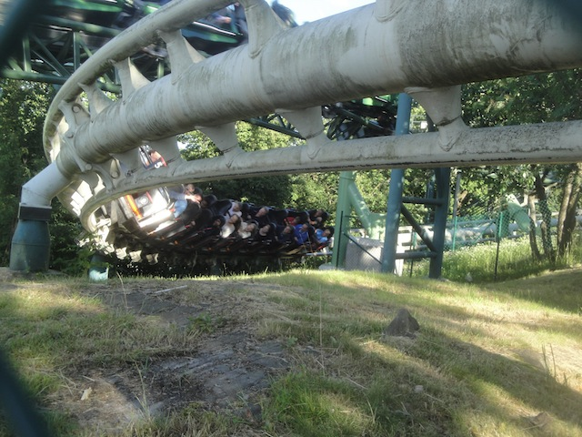

| |
Lisebergbanan Review

We're here at Liseberg. Today's ride we'll be reviewing for you is Lisebergbanan. This is the park's Schwarzkoph, and it certainly is an intersting ride. People generally will forget about this ride thanks to all the attention given to Balder and Helix (and even Kanonen back when it was at the park). But this really is an intersting and underrated coaster. In fact, it was said that this was Anton Schwarzkoph's favorite coaster. I personally don't consider it to be my favorite coaster of his, but I can totally see why this was his favorite. It's beautiful and it kicks ass. So let's hop in the cars, pull down the lap bars, and away we go. We head around a turn and start climbing up the lifthill. Now this lifthill is also going up an actual hill, so we don't really get a sense of height. We just see this lifthill going on forever. And hey. We get a great view of Helix from here. In fact, we just might see it go for us. We eventually get to the top, having just climbed this mammoth lifthill. We then head down a curved drop, which gives us some nice speed, as well as a nice headchopper as we dive right under Helix. Wee!!! We then head around this huge banked turn, low to the ground, going under Helix yet again, and this is just really relaxing. We're just flying low to the ground, going around this turn, getting some nice laterals. We then change directions, go through another banked turn, only to unbank and go through a tiny little hill. YAY!!! MILD AIRTIME!!! We then up a small hill and around this curved drop that goes around their Space Shot. We then head around another banked turn, and we're slowing down. We're not going to make it. No problem. Here's a tiny little lifthill. It's basically what they do on Helix. Only instead of a second launch, it's a second lifthill. Hey, I don't really mind. It's mildly out of place, but it's still flowing pretty well. And now, it's going to get really fun. We head down a spiral drop, right down the hill, and this gives us a lot of speed. We then promptly lose all this speed twisting back up the hill, but hey. I'm enjoying it. We head around a slowish banked turn, only to go down a smaller spiral drop off the same hill. It's even inside the first spiral drop, and it curves up the same hill. This is just cute. This just leads us into a midcourse brake (LAME!!!), which then propmtly takes us back down the hill for another spiral drop. Hey, now we're on the outside. Oh, and during all these spiral hill drops, we go under some structure. Pretty cool. We finally head in another direction, head on up and into another mini airtime hill. Not really much airtime, but I'll give it credit for being so damn enjoyable. We head up another tiny hill, dip down, and head into a downward helix. AWESOME!!! We go straight through the helix and go into another midcourse brake. OK. I'm starting to sense a pattern with this ride. But no. That's the end. Meander a little more, hit the final final brakes, and we see the station. On the one hand, it's not as intense as all the other Schwarzkophs, so I understand why some may not be thrilled by it, and it's not my favorite. But something about this ride is just so fun. All the spiral drops, all the laterals, it's just a really fun and enjoyable coaster. Highly recommended if you're ever at Liseberg.
7/10
Location: Liseberg
Opened: 1987
Built by: Schwarzkopf
Last Ridden: June 22, 2014
Lisebergbanan Photos


Home
|